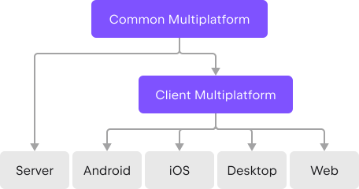

Kotlin
Concise. Multiplatform. Fun.
Why Kotlin?
Share code on your terms and for different platforms
Simplify the development of cross-platform projects with Kotlin Multiplatform. It reduces time spent writing and maintaining the same code for different platforms while retaining the flexibility and benefits of native programming. Kotlin applications will work on different operating systems, such as iOS, Android, macOS, Windows, Linux, watchOS, and others.
 Learn about Kotlin MultiplatformBig, friendly and helpful community
Kotlin has great support and many contributors in its fast-growing global community. Enjoy the benefits of a rich ecosystem with a wide range of community libraries. Help is never far away — consult extensive community resources or ask the Kotlin team directly.
Join the community